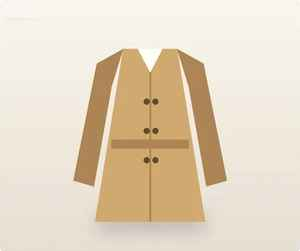

JPEG, PNG, WebP, GIF, TIFF, AVIF, HEIC, SVG, MP4, MOV, M4A, MP3, WAV, FLAC, PDF 안의 JUMBF 기록, 서명, 클레임, 단정 해시, 파일 결합(데이터, BMFF)을 읽고 무결성부터 확인합니다.
구조
원본은 기기에, 판단과 서명은 서버에
파일 원본은 사용자 기기를 떠나지 않습니다. 서버는 특징값과 서명 검증에 필요한 출처 기록 조각만 받아 판정하고, 결과를 서명해 돌려줍니다.
- 판독기aim-extract, 기기 안, 공개
- 신뢰 목록C2PA 공식, 임시 목록, 7일마다 갱신
- 판정 엔진 AMP서명 재검증, 도구 지문, 판정 규칙, 서버 전용
- 발급기근거 맞춤 발급, 전자서명(Ed25519)
- 원장해시 기록, 하루치 사슬, 공개 타임스탬프
- 등록 색인SHA-256, 표시본 해시, 지각 해시
- 확인마크 확인 페이지, 공개키, 누구나
판독기 aim-extract
15가지가 넘는 형식에서 출처 기록을 찾습니다
공개 라이브러리입니다. 브라우저와 Node에서 같은 코드로 동작하고, 의존성이 없습니다. 판단은 하지 않고 기록을 읽기만 합니다.
디지털 출처 유형, 사용한 AI 시스템, 편집 이력, 촬영 기기 정보를 읽습니다.
Stable Diffusion, ComfyUI, NovelAI, Midjourney 같은 도구가 PNG, EXIF에 남기는 설정값을 찾습니다(프롬프트 내용은 서버로 보내지 않음).
서버에는 특징값, 해시, 서명 검증에 필요한 조각(196KB 이하)만 보냅니다. 썸네일, 위치 정보, 작성자 정보는 빼고 보냅니다.
출처 판정 엔진 AMP
서명을 다시 검증하고, 근거의 세기까지 판정합니다
판정 규칙과 AI 도구 지문 DB는 서버에만 있습니다. 공개된 코드만으로는 같은 판정을 재현할 수 없도록 나눠 두었습니다.
서명 재검증
클라이언트를 믿지 않음기기에서 보낸 판독 결과를 그대로 믿지 않고, 서버가 서명, 클레임, 단정 해시를 처음부터 다시 계산합니다. ECDSA(P-256, P-384, P-521), RSA-PSS, Ed25519까지 7가지 서명 방식을 직접 구현했습니다.
인증서 사슬, 신뢰 목록
누가 서명했는지서명 인증서 사슬을 C2PA 공식 신뢰 목록, 임시 신뢰 목록과 대조하고, 용도(EKU), 기간, 타임스탬프까지 확인합니다. 목록은 7일마다 자동으로 갱신합니다.
도구 지문, 서명자 분류
무엇으로 만들었는지생성 도구, 편집기, 카메라, 플랫폼을 구분하는 지문 DB로 AI 생성, 편집, 합성, 보정, 촬영 원본을 가려냅니다. 이름만 일치하는 약한 단서로는 판정을 좁히지 않습니다.
충돌 규칙, 오염 막기
틀린 표시를 막는 규칙AI 흔적이 하나라도 있으면 'AI 미사용' 표시를 막고, 신뢰할 수 있는 촬영 원본 서명이 있으면 AI 마크를 막습니다. 다른 사람이 등록한 표시본 해시나 비슷한 이미지의 마크는 참고로만 사용해, 남의 등록 기록이 내 표시를 가로막지 못하게 했습니다.
서명된 마크
AIMarker가 발급한 마크인지, 누구나 서버 없이 확인합니다
마크를 발급할 때 표시, 근거, 파일 지문, 원장 번호를 표준 형식(JWS, EdDSA)으로 서명합니다. 서명 키는 서버가 스스로 만들어 서버 밖으로 내보내지 않고, 공개키만 공개합니다.
// 머리: { alg: 'EdDSA', typ: 'JWT', kid: 'amk1-…' }
{
"iss": "https://aimarker.kr",
"sub": "AM-7Q2K9MXR4T",
"label": "ai_generated",
"basis": "verified",
"kind": "image",
"sha256": "05a807f5…",
"dhash": "8f1c3a…",
"ledger": "LG261016-…"
}
- 공개키/.well-known/aimarker-keys.json, API am.pubkey
- 어디서나 확인마크 확인 페이지는 보는 사람의 기기에서 서명을 직접 확인합니다. 표준 JWT 도구로도 확인할 수 있습니다.
- 파일 속에도마크를 넣은 이미지는 XMP에 서명을 함께 담아, 파일만 있어도 확인할 수 있습니다.
- 위조된 마크서명이 없거나 맞지 않으면 마크 확인 페이지가 바로 알려 줍니다.
공개 원장
AIMarker도 지난 기록을 몰래 고칠 수 없도록
발급, 변경, 철회 기록은 해시와 서버 시각으로 원장에 남습니다. 매일 그날의 원장 줄을 글 하나로 묶어 전날 뿌리 해시와 잇고, 그 글의 SHA-256을 공개 타임스탬프 서비스(OpenTimestamps)에 올려 비트코인 블록체인 시각에 고정합니다.
- 1 기록원장 번호, 시각, 해시, 종류
- 2 하루 묶기그날 기록 + 전날 뿌리 해시로 사슬 연결
- 3 고정뿌리 해시를 공개 달력 서버 세 곳에 보냄
- 4 확인그날 원장 글, .ots 증명을 받아 누구나 확인
하루치 원장은 다음 날 0시 10분이 지나 처음 도는 정기 작업에서 묶입니다. 마크 확인 페이지와 원장 확인에서 그날 원장 글과 증명 파일을 받을 수 있습니다.
지문
표시가 지워진 사본도 원래 마크를 찾습니다
정확히 같은 파일은 SHA-256으로, 마크를 넣은 파일은 표시본 해시로, 크기, 화질만 바뀐 이미지는 지각 해시로 찾습니다. 아래 값은 이 브라우저에서 방금 계산한 값입니다.

A ↔ B계산 중
A ↔ C계산 중
파일 SHA-256계산 중정확 일치 해시는 한 바이트만 달라도 완전히 달라집니다
이미지를 9 × 8 회색조로 줄인 뒤 이웃한 픽셀의 밝기 차이로 64비트 지문(dHash)을 만들고, 서로 다른 비트 수로 얼마나 가까운지 잽니다. 이 브라우저에서 방금 계산한 값입니다. 이런 단순 지문은 크게 자르거나 뒤집은 파일을 놓칠 수 있어, 마크 등록 색인은 정확 일치(SHA-256), 표시본 해시, 지각 해시를 함께 사용합니다.
AI 작성 추정 DET
같은 글은 언제나 같은 값, 문장마다 이유가 보이게
AI 작성 추정률은 사람 글과 여러 AI의 한국어 글을 학습한 결정적 판별 모델이 매깁니다. 무작위 요소가 없어 같은 글은 몇 번을 넣어도 같은 값이 나오고, 판정(안전, 고위험, 부적합)도 정해진 기준으로 낸 추정이며 증명으로 쓰지 않습니다.
무엇을 보나
말투의 흔적
띄어쓰기, 쉼표 위치, 문장 끝맺음, 연결어, 문장 길이가 얼마나 고른지, 대화창 복사 흔적처럼 내용보다 말투에 남는 패턴을 봅니다. 내용을 담은 낱말에 덜 기대도록 특징을 골랐습니다.
어떻게 재나
문장 단위
앞뒤 문장을 함께 보며 문장마다 점수를 매기고, 글 전체 점수를 내는 동시에 AI 패턴이 이어지는 구간을 묶습니다. 사람 글 사이에 AI 문단이 섞여도 그 부분만 표시됩니다.
어떻게 확인했나
학습에 없던 AI로
학습에 넣지 않은 다른 AI 모델의 글, 그리고 학생 글처럼 딱딱해서 헷갈리기 쉬운 사람 글로 따로 검증했습니다. 사람 글을 AI로 잘못 보는 일을 줄이는 쪽으로 기준값을 정했습니다.
한계
짧은 글, 시
150자보다 짧은 글, 시, 노랫말처럼 짧은 줄로 된 글, 사람이 많이 고친 AI 글은 추정이 불안정합니다. 결과만으로 다른 사람을 판단하지 마세요.
인간화 엔진 HUM 1.2
생성 AI 없이, 사람 글 통계로 사람 말투를
휴머나이징은 글을 생성 AI에 다시 쓰게 하지 않습니다. 사람 글과 AI 글을 비교해 찾은 AI 말버릇을 규칙으로 고치고, 바꾼 말이 사람이 실제로 쓰는 말인지, 뜻과 사실과 말의 세기가 그대로인지 한 문장씩 확인합니다. 확인을 넘지 못한 문장은 원문으로 둡니다. 1.2(2026.10.31)부터는 고친 글을 AI 작성률 판별 모델로 문장마다 다시 재서, 같은 뜻의 후보 가운데 AI 패턴이 가장 많이 줄어드는 표현을 고릅니다.
사람 글 약 10억 자
위키백과, 국민청원, 뉴스, 후기, 대화 같은 공개 자료를 통계로만 써서 용언 사전 15,659개와 실제 쓰임 표(이웃 말 통계)를 만들었습니다. 원문은 엔진에 넣지 않습니다.
정합성 확인 8단계
꼴 다시 만들기, 다시 읽기, 뜻 보존(부정, 과거, 숫자, 영문), 말투 통일, 실제 쓰임 표, 후보 3개 중 고르기, 글 전체 말투, 말의 세기. 하나라도 어긋나면 그 문장은 원문입니다.
글 종류와 말투
기사, 논문, 법과 결정문, 청원을 먼저 알아보고 글말 관용구와 인용과 목록은 그대로 둡니다. 부탁하거나 높여 말하는 글은 한다체로 낮추지 않고 까닭을 알려 줍니다.
같은 글은 같은 결과
무작위 요소가 없어 같은 글과 같은 설정이면 언제나 같은 결과입니다. 글은 서버 밖으로 나가지 않고 저장하지 않으며, 보통 몇 초 안에 끝납니다.
// 문장 하나가 지나가는 길 글 종류 알아보기 → 지킬 곳 감싸기(숫자, 이름, 인용, 주소) → 규칙 후보(번역투, 상투어, AI 버릇, 대화창 흔적) → 꼴 읽기와 다시 만들기(용언 사전) → 실제 쓰임 표 → 뜻 보존과 말의 세기 확인 → 글 전체 말투 → 후보 3개 중 사실을 다 지키고 가장 사람 글다운 것
규칙, 사전, 표는 서버에만 둡니다. 실제 결과 보기
검증 결과
지금까지 확인한 것만 적습니다
목표치가 아니라 개발 과정에서 실제로 돌려 본 시험 결과입니다. 정확도를 부풀리지 않도록 시험 범위도 함께 적었습니다.
C2PA 판정 일치
50 / 50
C2PA 공개 시험 파일과 직접 만든 정상, 변조 파일 50개에서 기준 구현(c2pa-rs)과 같은 서명, 무결성 판정을 냈습니다.
서명 방식
7가지
ES256, ES384, ES512, PS256, PS384, PS512, Ed25519를 서버에서 다시 검증합니다. 실제 신뢰 목록 인증서(Truepic, Adobe)로 사슬도 확인했습니다.
변조 찾기
클레임, 단정, 픽셀
서명한 뒤 클레임, 단정, 픽셀을 바꾼 시험 파일을 모두 '바뀜'으로 판정했습니다.
마크 서명
표준과 일치
마크 서명은 표준 Ed25519 구현과 같은 값을 내고, 일반 JWT 도구로 확인됩니다.
한계
- 화면 캡처, 다시 촬영, 저장 과정에서 출처 기록이 지워지면 AI 사용을 기술로 확인할 수 없습니다. 이때는 '발급자 신고'로 표시합니다.
- 글의 AI 사용은 기술로 판정하지 않습니다. 'AI로 작성' 같은 표현이 있으면 한 번 더 확인을 요청합니다.
- 서명 없는 메타데이터는 누구나 고칠 수 있습니다. 그래서 '파일 기록'은 '서명 검증'보다 낮은 근거로 표시합니다.
- 지각 해시는 크게 자르거나 뒤집은 이미지를 놓칠 수 있습니다.
- 신뢰 목록은 C2PA가 정하며 바뀔 수 있습니다. 목록 밖 서명은 '서명은 맞지만 신뢰 목록 밖'으로 따로 적습니다.
원칙
- 근거가 없으면 추측하지 않고, 근거의 세기를 숨기지 않습니다.
- 원본 파일, 글, 프롬프트는 받지 않습니다.
- 판정 규칙은 공개하지 않지만, 판정 결과의 근거는 마크마다 공개합니다.
- 마크는 표시와 근거의 기록이며 법적 적합성을 보증하지 않습니다.
지식재산, 연구
베끼기 어려운 부분을 권리로
아래는 출원을 준비하고 있는 내용입니다. 아직 출원, 등록을 마친 것은 아닙니다.
출처 기록의 검증 수준에 따라 발급할 수 있는 AI 표시를 정하고 충돌 표시를 막는 방법(출원 준비)
전자서명 마크와 정확, 지각 지문, 표시본 해시를 함께 사용해 사본을 원래 마크와 잇는 방법(출원 준비)
하루치 표시 원장을 사슬로 잇고 공개 타임스탬프에 고정하는 방법(출원 준비)
사람 글 통계로 만든 실제 쓰임 표와 문장 단위 정합성 확인으로 바꿈을 거르고, 뜻이나 말의 세기가 어긋나면 되돌리는 인간화 방법(출원 준비)
'AIMarker' 상표 출원 준비, 보이지 않는 워터마크 연구